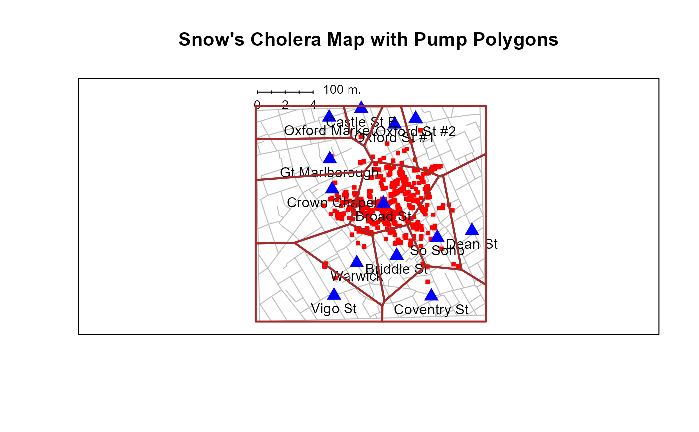
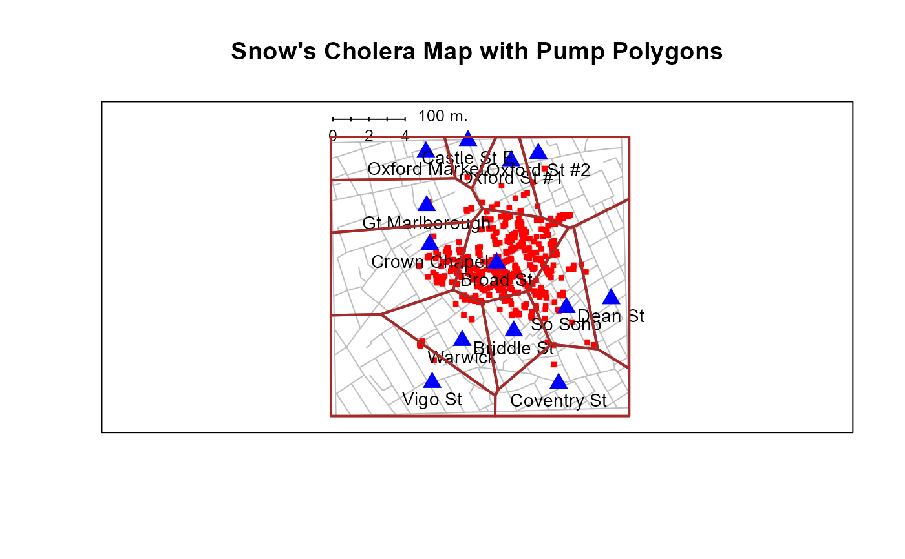

Draw John Snow's Map of Cholera in London
SnowMap.RdThe main function SnowMap draws versions of John Snow's map of cholera deaths in
the South London area surrounding the Borad Street pump.
during the 1854 outbreak.
It is a wrapper for the various subfunctions also listed here:Splot sets up the basic plotSstreets draws the streetsSdeaths plots the deathsSdeaths plots the pump locationsSscale draws the scaleSpolygons draws the boundaries of the Voronoi polygons separating the pumpsSdensity draws and fills contours of the 2D density of deaths
Usage
SnowMap(xlim = c(3, 20), ylim = c(3, 20),
axis.labels = FALSE, main = "Snow's Cholera Map of London",
scale = TRUE, polygons = FALSE, density=FALSE,
streets.args = list(col = "grey", lwd = 1),
deaths.args = list(col = "red", pch = 15, cex = 0.6),
pumps.args = list(col = "blue", pch = 17, cex = 1.5, cex.lab = 0.9),
scale.args = list(xs = 3.5, ys = 19.7),
polygons.args = list(col=NA, border="brown", lwd=2, lty=1),
density.args=list(bandwidth=c(0.5,0.5),
col1=rgb(0,1,0,0),
col2=rgb(1,0,0,.8))
)
Splot(xlim = c(3, 20), ylim = c(3, 20),
xlab = "", ylab = "",
axis.labels = FALSE,
main = "Snow's Cholera Map of London")
Sdeaths(col = "red", pch = 15, cex = 0.6)
Spumps(col = "blue", pch = 17, cex = 1.5, cex.lab = 0.9)
Sstreets(col = "gray", lwd = 1)
Sscale(xs = 3.5, ys = 19.7)
Spolygons(col=NA, border="brown", lwd=2, lty=1)
Sdensity(bandwidth = c(0.5, 0.5), col1 = rgb(0, 1, 0, 0), col2 = rgb(1, 0, 0, 0.8))Arguments
- xlim
Limit for the horizontal axis. Specify ranges smaller than the defaults to zoom the plot.
- ylim
Limit for the vertical axis.
- axis.labels
Logical. Show axis tick mark labels?
- main
Plot title
- scale
Logical; draw a scale (in meters) on the plot
- polygons
Logical; Use
Spolygonsto draw theSnow.polygonson the plot?- density
Logical; Use
Sdensityto draw the 2D bivariate density of deaths on the plot?- streets.args
List of arguments passed to
Sstreets- deaths.args
List of arguments passed to
Sdeaths- pumps.args
List of arguments passed to
Spumps- scale.args
List of arguments passed to
Sscale- polygons.args
List of arguments passed to
Spolygons. Note thatcolhere now refers to the fill colors, passed topolygon. Thecolargument here can be a vector of up to 13 colors, one for each pump region.- density.args
List of arguments passed to
Sdensity- xlab
Label for horizontal axis
- ylab
Label for vertical axis
- col
Color of points and lines used by various functions
- pch
Point character used by by various functions
- cex
Character size used by by various functions
- cex.lab
Character size for labels used by
Spumps- lwd
Line width used by by various functions
- border
Color of border lines used by
Spolygons- xs
x location of the scale used by
Sscale- ys
y location of the scale used by
Sscale- lty
Line type used by by various functions
- bandwidth
Bandwidth used by
bkde2DinSdensity- col1
Lower level of color range used by
colorRampPaletteinSdensity- col2
Upper level of color range used by
colorRampPaletteinSdensity
References
Snow, J. (1885). On the Mode of Communication of Cholera. London: John Churchill
Thomas Coleman, "John Snow Research project",
https://www.hilerun.org/econ/papers/snow/index.html
gives extensive analyses of Snow's data with R notebooks on Github.
See also
Snow for description of the data sets
Examples
SnowMap()
 SnowMap(axis.labels=TRUE)
SnowMap(axis.labels=TRUE)
 SnowMap(deaths.args=list(col="darkgreen"))
SnowMap(deaths.args=list(col="darkgreen"))
 SnowMap(polygons=TRUE, main="Snow's Cholera Map with Pump Polygons")

SnowMap(density=TRUE)
SnowMap(polygons=TRUE, main="Snow's Cholera Map with Pump Polygons")

SnowMap(density=TRUE)